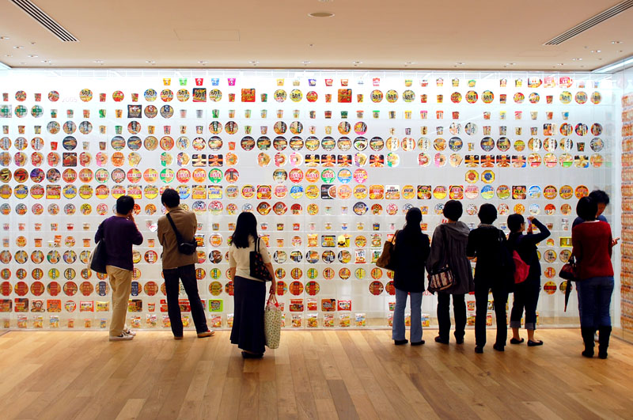

Instant ramen, invented in 1958 by Momofuku Ando, marked a turning point in the history of ramen. This revolutionary product offered a quick, affordable, and satisfying meal, making ramen accessible to people worldwide.
There is also the Cup Noodles Museum, an interactive museum in Japan dedicated to the history and innovation of instant ramen. Located in Yokohama and Osaka, Japan, as well as Tsim Sha Tsui, Hong Kong, it showcases the journey of Momofuku Ando, the creator of instant noodles, and his impact on global food culture. Visitors can explore exhibits on the invention of Cup Noodles, participate in hands-on workshops to create custom ramen, and learn about the evolution of instant noodle technology. It’s a must-visit for ramen lovers and those curious about the science behind this beloved dish!